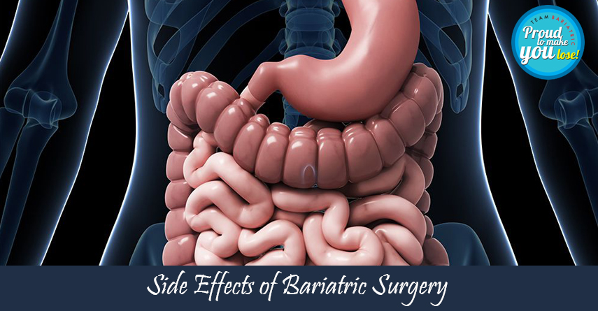

Understanding the Side Effects of Bariatric Surgery: What You Need to Know
Overview of Bariatric Surgery
Bariatric surgery is increasingly being accepted as a viable option for treating morbid obesity and its associated diseases such as diabetes mellitus and hypertension. Surgery provides long-term sustained weight loss as well as resolution of co-morbid conditions.
The benefits of bariatric surgery are numerous but there are also a few risks and side effects associated with various bariatric surgical procedures.
Common Bariatric Procedures in India
The most common bariatric surgical procedures performed in India are:
Immediate Side Effects of Bariatric Surgery
There are a few immediate side effects that can happen after bariatric surgery like bleeding, leak, intestinal obstruction, and venous thromboembolism. The side effects due to malnutrition or undernutrition are seen in the long term, particularly after laparoscopic gastric bypass surgery.
The incidence of bleeding is less than 4% in patients undergoing bariatric surgery. Most cases can be managed by blood transfusions alone. Some cases might require laparoscopy to stop the bleeding. A leak from the anastomosis site or sleeve staple line occurs in about 0.7% to 5% of the patients. If the leak is early, re-laparoscopy with identification of the leak and its closure is done with adequate drainage, bowel rest, and antibiotics.
Similarly leaks after a mini gastric bypass can be managed early by drainage and conversion of the procedure to Roux-en-Y gastric bypass along with a feeding tube in the intestines. The other rare immediate problem can be that of wound infection which is managed by dressing and antibiotics. Obesity is an independent risk factor for thromboembolism which is the clotting of blood in the veins of the body particularly the legs. This is best avoided by taking heparin injections for the first few days after the surgery and wearing graded pressure stockings for a few weeks. Early active mobilization is the best precautionary method.
Long-Term Side Effects and Nutritional Deficiencies
Lately, there can be obstruction of the intestines due to various factors which result in pain and distension of the abdomen along with vomiting. The possible causes usually are smoking, and the formation of ulcers. This can be identified by doing an endoscopy or a CT scan. Treatment of the possible causes can be done immediately.
After bariatric surgery, iron, vitamin B12, and other micronutrient deficiencies can occur. Iron deficiency occurs in patients within 2 to 5 years after surgery. Supplementation with iron can reduce iron deficiency significantly. Calcium and vitamin D absorption are impaired after gastric bypass as well. We obtain a complete blood count and iron, B12, calcium, folic acid, vitamin D, levels before surgery, 6 months and 1 year after surgery, and yearly thereafter. We recommend routine daily supplementation with a multivitamin, iron, vitamin B12, and calcium along with vitamin D supplementation depending on the serum levels.
Dumping Syndrome
Dumping syndrome is a common side effect after Roux-en-Y Gastric Bypass (RNYGB) surgery. This usually occurs due to poor food choices. It is related to the ingestion of refined sugars (including high fructose corn syrup) or high glycemic carbohydrates. It can also occur with dairy products, some fats, and fried foods.
The fact is that these foods will interfere with long-term weight loss and should not be eaten anyway.
Symptoms start typically 20-30 min after the food. It includes sweating, flushing, lightheadedness, tachycardia, palpitations, desire to lie down, upper abdominal fullness, nausea, diarrhea, cramping, and active audible bowel sounds.
Conclusion
In summary, although bothersome and sometimes worrisome, dumping syndrome is not a life-threatening problem. Patients need to learn about and read basic nutrition labels. The benefit is that it teaches patients quickly that certain foods and additives cannot be tolerated. Patient compliance and commitment to long-term follow-up are mandatory.
In short, the side effects of bariatric surgery are rare. Timely
identification and intervention are the keys to preventing serious complications.
Still confused about bariatric surgery? Then schedule your consultation with the top bariatric surgeon in Delhi at Smart Cliniqs.
Back to Blog